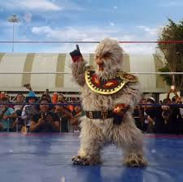

Nombre real: No revelado públicamente
Fecha de creación: Años 80
Origen: Personaje inspirado en la mitología maya
Alias: El duende maya, Compañero de Tinieblas
Alushe es una figura entrañable de la lucha libre mexicana, conocido por su pequeña estatura, vestimenta de peluche y su papel como compañero inseparable de Tinieblas. Su carisma lo convirtió en uno de los personajes más queridos por el público infantil.
Alushe ha acompañado a Tinieblas en decenas de funciones, además de aparecer en historietas, programas de televisión, revistas y eventos especiales. Su personaje mezcla humor, ternura y un toque místico inspirado en los aluxes de la cultura maya.
La identidad de Alushe siempre ha permanecido en el misterio, contribuyendo a su magia como personaje de fantasía. Es recordado con cariño por generaciones que crecieron viéndolo en el ring y la televisión.